Qmmit
On this page
Recommendation: Consolidate with Prompture rather than maintain two capture businesses.
On a small screen, swipe horizontally to read every column.
| Snapshot | Assessment |
|---|---|
| Supplied location ID | aicommit- |
| Product family | Engineering evidence |
| Implementation stage | CLI + web implementation |
| Review date | 2026-09-26 |
| Local state | local changes present |
Vision and the problem it addresses
Wrap git with prompt capture, privacy controls and prompt-to-commit attribution, then present a developer portfolio.
Who needs it: Developers who will adopt a git wrapper to record AI assistance; teams investigating code provenance.
The moment it becomes useful: People want to connect a prompt to a commit without manually maintaining a separate journal.
How it works

This diagram summarizes the inspected design. It is not evidence of a successful end-to-end deployment. For a hands-on journey, use the onboarding guide.
How well it addresses the problem
- matchAllPrompts scores each prompt against commits and retains the highest candidate above the threshold.
- The CLI includes secrets/redaction, encrypted-sync-related code and multi-agent session scanning.
- Local-first prompt storage gives a useful control point before upload.
These are implementation strengths. Repeated use, customer demand and measured business outcomes remain separate questions.
What is missing or unproven
- The matcher uses nested prompt×commit comparisons and any-typed records; scale and malformed payload behavior need validation.
- A 50-point threshold is not a calibrated probability or proof of contribution. Sequential session linkage can make ordering material.
- Replacing a habitual git command creates adoption friction; hooks may be easier, but require careful coexistence.
- The inspected local scanner has uncommitted changes and the remote belongs to pandey019. Attribution and ownership need preserving if code is reused.
Smallest useful next step
Compare Qmmit and Prompture on the same capture corpus. Retain the stronger scanner/privacy pieces behind one versioned event schema and one user-facing identity.
Acceptance exercise: Use synthetic prompt/commit fixtures with unrelated changes, reordered events and redaction patterns. Verify repeated sync is idempotent and a plain git operation remains successful when capture fails. Existing tests were inspected by inventory, not executed.
This is a proposed validation exercise unless explicitly recorded as executed in VALIDATION.
Position in the portfolio
Related work: Prompture, Sovix CLI, Receipts.
Read the overlap and integration decisions before merging features. Shared vocabulary does not guarantee shared IDs, permissions, storage or lifecycle semantics.
On a small screen, swipe horizontally to read every column.
| Reviewer judgment, 1–5 | Score |
|---|---|
| Effort to a credible narrow pilot | 2 |
| Potential breadth and recurrence of the need | 2 |
| Integration, operational and consequence exposure | 3 |
These are ordinal planning judgments, not completion percentages or a commercial valuation. Empty/archive projects should be parked rather than treated as active bets.
Evidence and next reading
Source references and snapshot limits · Developer / Claude onboarding · Portfolio synthesis